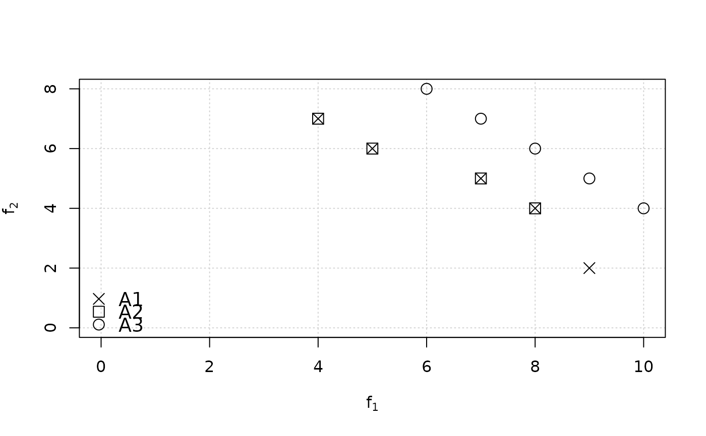

Computes the epsilon metric, either additive or multiplicative.
epsilon_additive(data, reference, maximise = FALSE) epsilon_mult(data, reference, maximise = FALSE)
| data | ( |
|---|---|
| reference | ( |
| maximise | ( |
A single numerical value.
The epsilon metric of a set \(A\) with respect to a reference set \(R\) is defined as
$$epsilon(A,R) = \max_{r \in R} \min_{a \in A} \max_{1 \leq i \leq n} epsilon(a_i, r_i)$$
where \(a\) and \(b\) are objective vectors and, in the case of minimization of objective \(i\), \(epsilon(a_i,b_i)\) is computed as \(a_i/b_i\) for the multiplicative variant (respectively, \(a_i - b_i\) for the additive variant), whereas in the case of maximization of objective \(i\), \(epsilon(a_i,b_i) = b_i/a_i\) for the multiplicative variant (respectively, \(b_i - a_i\) for the additive variant). This allows computing a single value for problems where some objectives are to be maximized while others are to be minimized. Moreover, a lower value corresponds to a better approximation set, independently of the type of problem (minimization, maximization or mixed). However, the meaning of the value is different for each objective type. For example, imagine that objective 1 is to be minimized and objective 2 is to be maximized, and the multiplicative epsilon computed here for \(epsilon(A,R) = 3\). This means that \(A\) needs to be multiplied by 1/3 for all \(a_1\) values and by 3 for all \(a_2\) values in order to weakly dominate \(R\). The computation of the multiplicative version for negative values doesn't make sense.
Computation of the epsilon indicator requires \(O(n \cdot |A| \cdot |R|)\), where \(n\) is the number of objectives (dimension of vectors).
Eckart Zitzler, Lothar Thiele, Marco Laumanns, Carlos M Fonseca, Viviane Grunert da Fonseca (2003). “Performance Assessment of Multiobjective Optimizers: an Analysis and Review.” IEEE Transactions on Evolutionary Computation, 7(2), 117--132.
Manuel López-Ibáñez
# Fig 6 from Zitzler et al. (2003). A1 <- matrix(c(9,2,8,4,7,5,5,6,4,7), ncol=2, byrow=TRUE) A2 <- matrix(c(8,4,7,5,5,6,4,7), ncol=2, byrow=TRUE) A3 <- matrix(c(10,4,9,5,8,6,7,7,6,8), ncol=2, byrow=TRUE) plot(A1, xlab=expression(f[1]), ylab=expression(f[2]), panel.first=grid(nx=NULL), pch=4, cex=1.5, xlim = c(0,10), ylim=c(0,8))legend("bottomleft", legend=c("A1", "A2", "A3"), pch=c(4,0,1), pt.bg="gray", bg="white", bty = "n", pt.cex=1.5, cex=1.2)epsilon_mult(A1, A3) # A1 epsilon-dominates A3 => e = 9/10 < 1#> [1] 0.9epsilon_mult(A1, A2) # A1 weakly dominates A2 => e = 1#> [1] 1epsilon_mult(A2, A1) # A2 is epsilon-dominated by A1 => e = 2 > 1#> [1] 2# A more realistic example extdata_path <- system.file(package="eaf","extdata") path.A1 <- file.path(extdata_path, "ALG_1_dat.xz") path.A2 <- file.path(extdata_path, "ALG_2_dat.xz") A1 <- read_datasets(path.A1)[,1:2] A2 <- read_datasets(path.A2)[,1:2] ref <- filter_dominated(rbind(A1, A2)) epsilon_additive(A1, ref)#> [1] 199090640epsilon_additive(A2, ref)#> [1] 132492066# Multiplicative version of epsilon metric ref <- filter_dominated(rbind(A1, A2)) epsilon_mult(A1, ref)#> [1] 1.054015epsilon_mult(A2, ref)#> [1] 1.023755